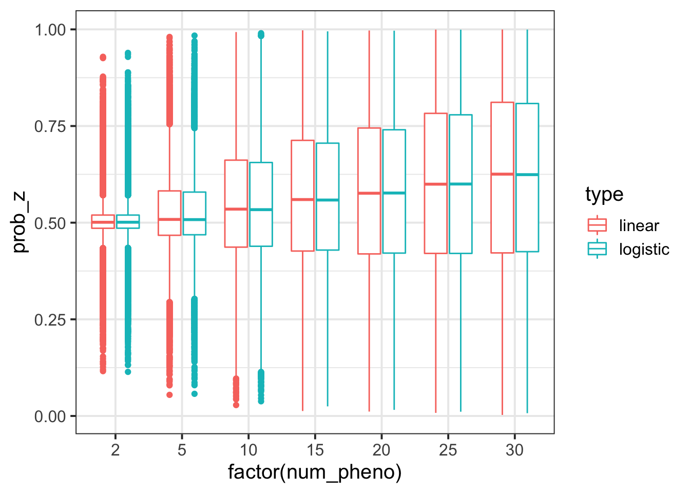
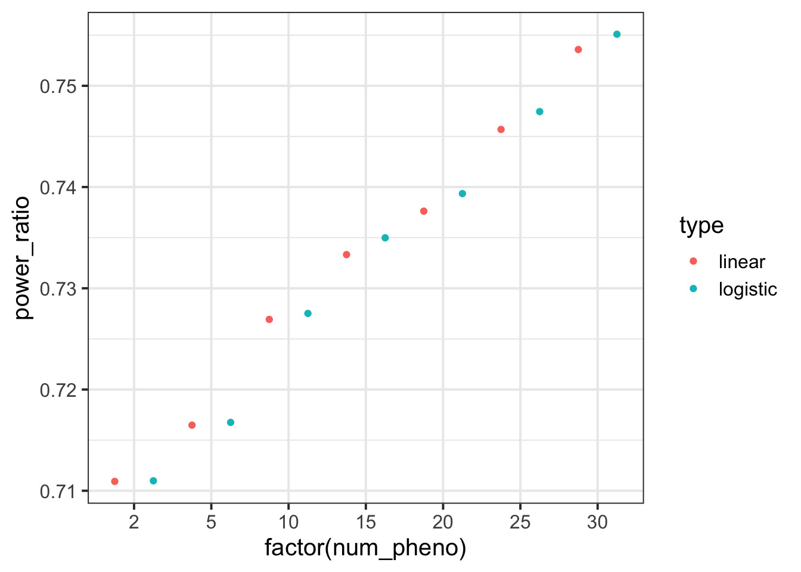
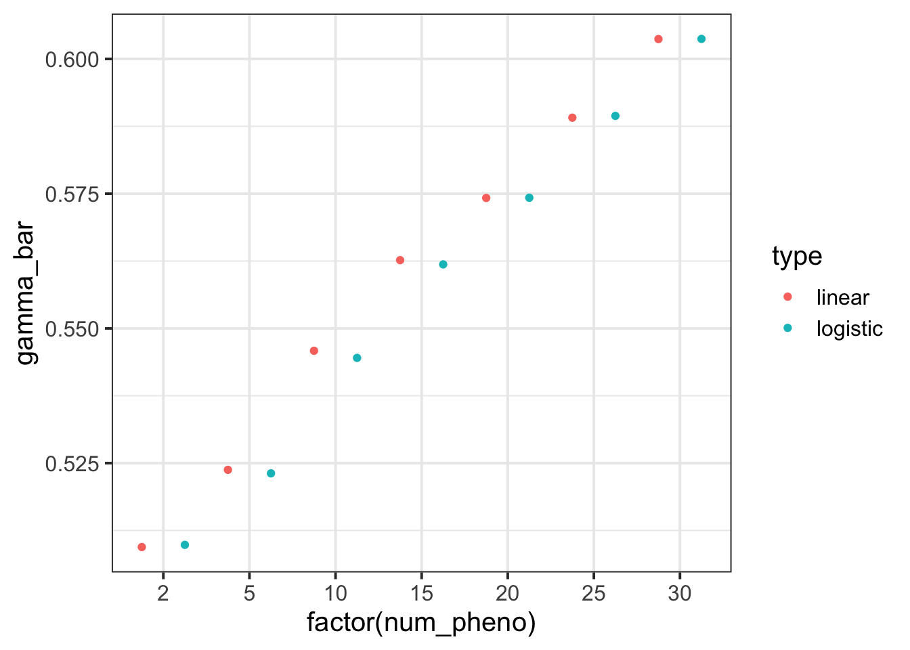

\[ \newcommand{\E}{\text{E}} \]
rm(list = ls())
library(ggplot2)
library(dplyr)
theme_set(theme_bw(base_size=15))
set.seed(2020)
# load some gists
source('https://gist.githubusercontent.com/liangyy/43912b3ecab5d10c89f9d4b2669871c9/raw/3ca651cfa53ffccb8422f432561138a46e93710f/my_ggplot_theme.R')
# load my library
source('../code/rlib_simulation.R')Previous attempt focuses on modeling continuous trait where linear model was used (\(y = X\beta + \espilon\)). Now that the actual data is binary traits, I sketch the logistic version of EM at here. Here, I do simulation to see how logistic model performs as compared to linear model when the outcomes are binary.
To simulation binary trait, I take liability model. Specifically, \(\phi = X\beta+ \epsilon\) and \(y = \mathbb{I}_{\phi > \tau}\) with \(\tau = \Phi^{-1}(1 - K)\) and \(K\) being disease prevalence.
By heritability, I mean the proportion of liability variation that can be explained by \(X\beta\). And the parameters for simulation are as follow.
sample_size = 10000
n_pheno = 30
prior_causal = 0.4
causal_sigma = 1
n_snp = 20
heritabiltiy = 0.05
maf_low = 0.05
maf_high = 0.45
prevalence = 0.10maf = get_maf(n_snp, maf_low, maf_high)
h_father = sim_hap(sample_size, n_snp, maf)
h_mother = sim_hap(sample_size, n_snp, maf)
h_child = transmit_haplo(h_father, h_mother)
effect_size = matrix(spike_and_slab(n_snp * n_pheno, 1 - prior_causal, causal_sigma), nrow = n_snp, ncol = n_pheno)
y_father = simulate_pheno_liability(h_father, effect_size, heritabiltiy, maf, prevalence)
y_mother = simulate_pheno_liability(h_mother, effect_size, heritabiltiy, maf, prevalence)source('../code/rlib_em_otf.R')
h1 = h_child[[1]]
h2 = h_child[[2]]
df_z = list()
for(np in c(2, 5, 10, 15, 20, 25, 30)) {
message('Working on num_pheno = ', np)
o = em_algorithm_otf(y_father[, 1 : np], y_mother[, 1 : np], h1, h2, maxiter = 50)
df_z[[length(df_z) + 1]] = data.frame(prob_z = o$gamma, num_pheno = np)
}## Working on num_pheno = 2## Working on num_pheno = 5## Working on num_pheno = 10## Working on num_pheno = 15## Working on num_pheno = 20## Working on num_pheno = 25## Working on num_pheno = 30df_z = do.call(rbind, df_z)source('../code/em_logistic.R')
h1 = h_child[[1]]
h2 = h_child[[2]]
h1_w_inter = cbind(rep(1, nrow(h1)), h1)
h2_w_inter = cbind(rep(1, nrow(h2)), h2)
df_z_logistic = list()
for(np in c(2, 5, 10, 15, 20, 25, 30)) {
message('Working on num_pheno = ', np)
o = em_logistic(y_father[, 1 : np], y_mother[, 1 : np], h1_w_inter, h2_w_inter, prior_prob_z = 0.5, maxiter = 50)
df_z_logistic[[length(df_z_logistic) + 1]] = data.frame(prob_z = o$prob_z, num_pheno = np)
}## Working on num_pheno = 2## Working on num_pheno = 5## Working on num_pheno = 10## Working on num_pheno = 15## Working on num_pheno = 20## Working on num_pheno = 25## Working on num_pheno = 30df_z_logistic = do.call(rbind, df_z_logistic)df = rbind(
df_z %>% mutate(type = 'linear'),
df_z_logistic %>% mutate(type = 'logistic')
)df %>% ggplot() + geom_boxplot(aes(x = factor(num_pheno), y = prob_z, color = type))
tmp_ = df %>% group_by(num_pheno, type) %>% summarize(S_bar = mean(prob_z ^ 2 + (1 - prob_z) ^ 2), gamma_bar = mean(prob_z)) %>% mutate(power_ratio = gamma_bar / sqrt(S_bar))
tmp_ %>% ggplot() + geom_point(aes(x = factor(num_pheno), y = power_ratio, color = type), position = position_dodge(1))
tmp_ %>% ggplot() + geom_point(aes(x = factor(num_pheno), y = gamma_bar, color = type), position = position_dodge(1))